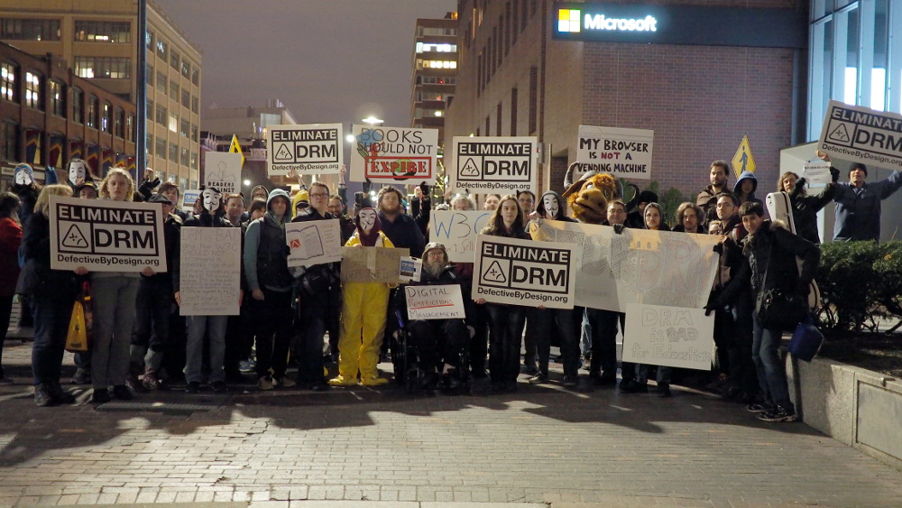
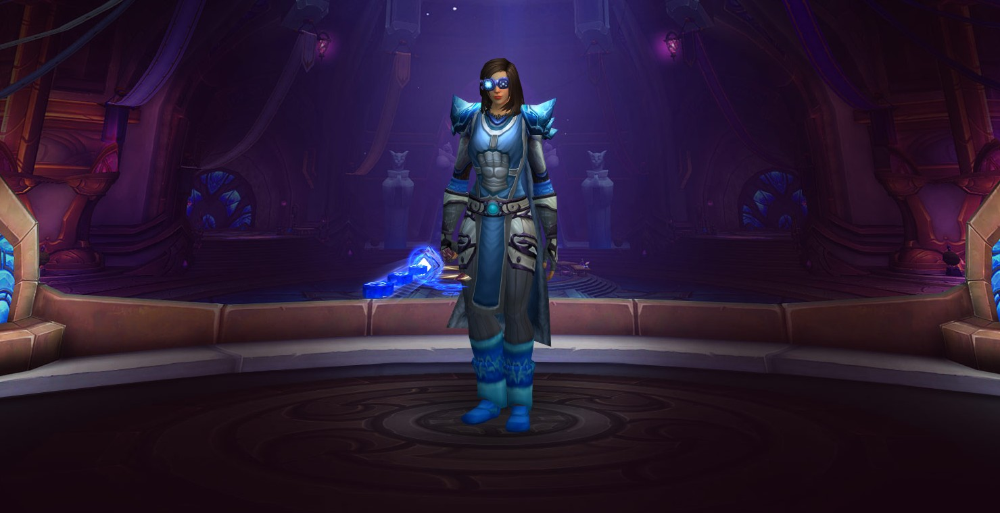
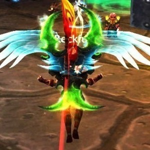
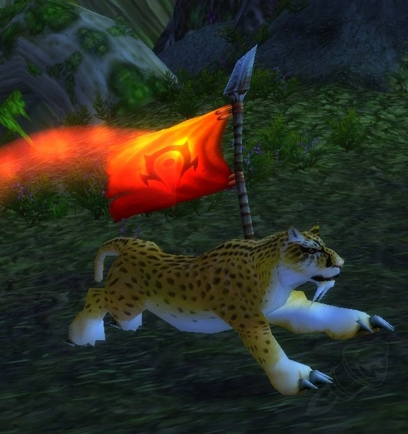

october 2025
there was a time when i felt like i was on the right track. not in some careerist or social sense or the ways progress is usually measured, but in carving out a corner of life where i could live on my own terms. a life where i wasn't bowing to systems designed to strip me of control. i was deep into privacy, security and the DIY ethos that comes with it. a NAS humming in the corner, catalogued media collections where my films and music lived on my drives, not under someone elses leash. daily driving linux, gaming included (somewhat out of spite to prove it's possible but mostly out of love). i have so much love for valve and gabe newell for pushing linux gaming forward to where it stands today, proton is a remarkable feat and it's impact will be looked back on as mastery one day. every session spent keying in wow, every night spent clawing at my dotfiles, every time i transcoded a movie into my library instead of throwing myself at the altar of a subscription - these things made me feel sane. i'd spend hours ripping and tagging FLACs, encoding shows into neat file structures, optimising my data redundancy so nothing was ever lost. it was tedious, but that tedium felt really fucking good. i didn't have to ask or pay for permission, i wasn't waiting for spotify to drop an album or netflix to renew its licenses. i was building something permanent that wasn't going to disappear overnight. it gave me structure, purpose and a strange amount of happiness.
but over time i let it slip. slowly. spotify crept in because it was easier than maintaining a library and i felt my relationship at the time demanded it. it was supposed to be a temporary compromise.. look how that worked out, it was just methadone i never weaned off lmfao. windows was back on the boot drive because of this fucking heinous meta of kernel level anti-cheats in modern titles. streaming services stacked up as my NAS sat neglected.. drives spinning for nothing. and bit by bit, i convinced myself it was okay. that id 'earned' not having to exert to watch or play something, that it's consequences didn't really apply to me because i 'knew better'.. but convenience is a drug, and like most drugs it robs you before you notice. i don't feel better having ceded ground to it. i feel terrible, hollow. it's hard to describe the mental health side of this without sounding melodramatic but the truth is, losing that control made me less stable. i felt that creeping low grade decay when you know you've abandoned something important and can't quite look yourself in the mirror about it. it's not even about the tech man. it's about the agency, about control. i let my hands off the wheel and i've been veering away. no longer engaged in my own life, just being a consumer slouched back in my chair while someone elses infrastructure dictates my choices.

world of warcraft is a huge part of why this fell apart. for most of my life wow has been an anchor, not just because it was fun (in fact it's often fucking infuriating) but because it demanded involvement. keying through the night, RBGs with teams, building and maintaining UIs, obsessing over keybinds and ergonomics, tinkering with everything until it fit like a glove. it was a living breathing part of me. when i distanced myself from wow i didn't just quit a game. i lost one of the last outlets that tied together my love of tech, my obsessive tinkering, and my social and musical connections. and that vacuum didn't magically direct it's weight to something productive or valuable.. instead to passive, easy, mindnumbing algorithm fed consumption.

wow is kinda fucking crazy right now. retail trundles on, classic has become this bizarre hydra - anniversary realms, hardcore realms, seasonal 'experiments' like season of discovery, and now mists of pandaria classic.. that last one blows my fuckin mind dawg. mop was the second expansion i ever played, and now it's 'classic'. that realisation hit like a crowdkill to the head.. time has looped back on itself. games i played growing up are now museum exhibits i could step back into, except they're alive again. theres something cruel in that. classic was meant to be this nostalgic indulgent thing, but seeing it advance into xpacs i vividly remember playing makes me realise how much of my life has passed since then. wow has sorta become a calendar of my life and the fact that im not in it anymore, only deepens the sense that i've lost my place in the timeline.

whats wild is that getting back into electronic music recently has cracked this all open again. it started with digging back into my old playlist but showing the homie sahan some trance that soundtracked my wow days flipped a switch. hearing the thrillseekers mix of 8 wonders - the morning after (especially that driving section) literally made me feel like i was on my druid, mid warsong gulch, flag on my back in cheetah form, racing to base while ymx life grips me. music collapses time like nothing else and that feeling proves it. i realise how much i miss that, caring enough to build and maintain my own worlds digital and otherwise. that overlap of dance music, wow, linux, privacy - was a structure i built to make life more bearable and even meaningful. and letting it slip has been corrosive.

" style="height:400px;">
i want to get back into it. all of it, the ecosystem of effort. the deliberate act of saying no to the easy option and pursuing the better option. because the easy option has heisted my happiness and created emptiness. it'll take time.. and a lot of effort. and it'll mean losing the comfort of convenience. but that's the point. if time is inevitable i want it to be mine.
+ maintaining my NAS, selfhosting essential services. the heart of my ecosystem.
+ daily driving linux again, fighting through the friction because the fight itself is valuable.
+ refusing streaming and maintaining my own library, because ownership matters more than convenience.
+ diving back into wow, because i fucking love it.
+ letting electronic music soundtrack the process the way it used to, because it forms memories.
the fact that classic wow is already at expansions i never thought id see again only makes me more determined. time is looping whether i like it or not.. and i'm tired of feeling hollow. so the priest is back.. i'm getting back in.
p.s. fuck blizzard for nerfing disc in mop..
← back to blog index